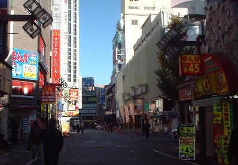
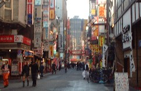

Free talk 雑談。
（112)歌舞伎町
なんだかんだと所用があって、先般、上京した。今回は土曜日と月曜日に所用があったので、２泊３日の日程となった。
日曜日、夜は人に会う予定があったが、昼間は手持ち無沙汰。ホテルが新宿だったので、午前10時頃、歌舞伎町に出かけてみた。 σ(-_-)が歌舞伎町をさかんに徘徊（？）していたのは、昭和42，3年頃。
年によって上京の頻度は違うにしても、 所用を済ませたらさっさと帰宅するのが毎度のパターン。そこで昭和４３年くらいから今まで、歌舞伎町に足を運んだことはない。
そうだ、久しぶりに（33年ぶりくらい）ぶらついてみるか。悪名高い客引きも、こんな時間にはいないだろう。なんてアホなことを考えながら行ってみた。
東京の人にはわかるだろうけれど、これが新宿コマ劇場の前。さすがにこの時間にはあまり人通りはない（おまけに日曜日だし）。当時、この辺りはさんざん歩いた。もちろん当時から繁華街であったが、一段とケバケバしくなっていた。残念ながら思いでの店は一つも残っていなかった。
コマ劇場から少し離れたところに、クラブ一番とか万両という名前のブー雀荘があった。よく顔をだしたが、どうも見つからなかった。昔の話だから無くなっていても不思議ではないが、場所の記憶も曖昧。違うところを探していたかもしれない。
むかし話だが、あるときクラブ一番のメンバーが給料日だといって給料袋をもってきた。目の前にで封を切って袋を逆さまにした。すると百円玉が一つ、コロンコロン....。メンバーいわく。「今月の給料、これだけ」だと言って自嘲していた。(~0~；
「メンバー止めればいいのに」と言ったら、「好きなことやって、メシは食わせてもらえる」とか、「バンスがいろいろあって」なんて意味のことを言っていた。
「万両」の方は、通い詰めていた奴が地元（富山県某市）に帰ってから、同じ名前のフリー雀荘を始めた、という思いでがある（ただ本家と違って、二十二麻雀だった）。そんなことをいろいろ思い出しながらぶらついたが、まぁ懐かしかった。
このあと、まだ時間があったので、中野のまんだらけも覗いてみた。予想通り？、お目当てのコミックはもちろんなかった。σ(-_-)が求めるのは昭和30年代から昭和40年代にかけてのものだから無理もないけど。